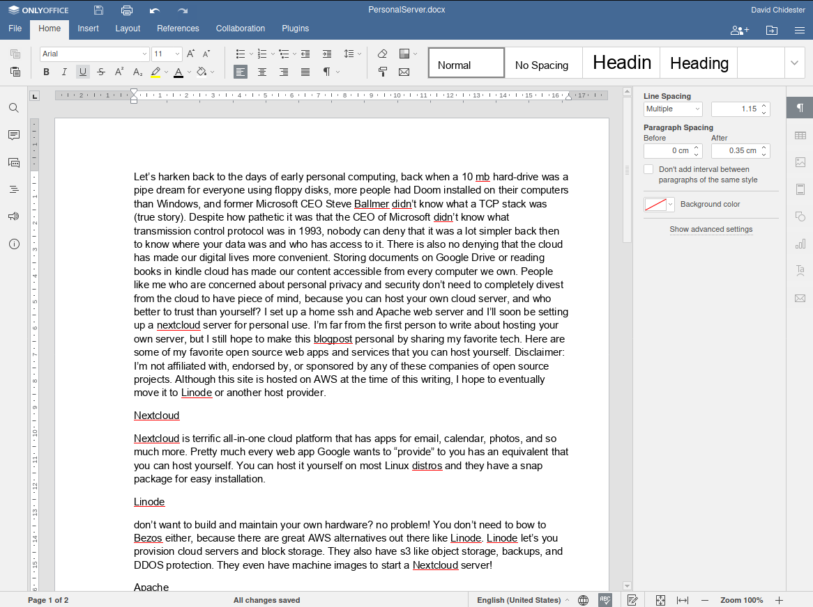
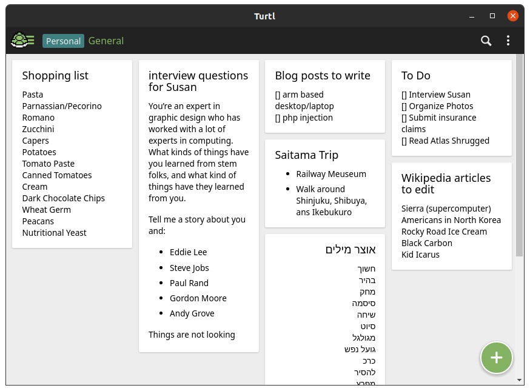
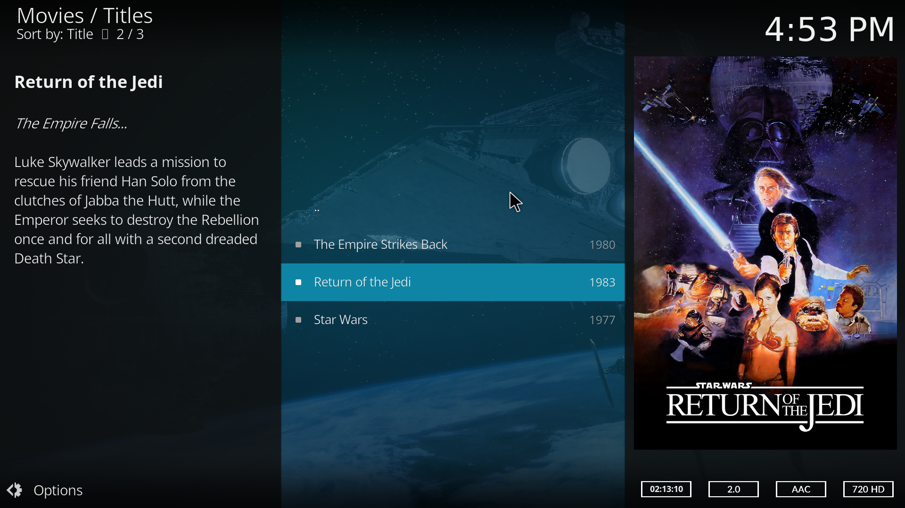

Let’s harken back to the days of early personal computing, back when a 10 mb hard-drive was a pipe dream for everyone using floppy disks, more people had Doom installed on their computers than Windows, and former Microsoft CEO Steve Ballmer didn’t know what a TCP stack was (true story). Despite how pathetic it was that the CEO of Microsoft didn’t know what transmission control protocol was in 1993, nobody can deny that it was a lot simpler back then to know where your data was and who has access to it. There is also no denying that the cloud has made our digital lives more convenient. Storing documents on Google Drive or reading books in kindle cloud has made our content accessible from every computer we own. People like me who are concerned about personal privacy and security don’t need to completely divest from the cloud to have peace of mind, because you can host your own cloud server, and who better to trust than yourself? I set up a home ssh and Apache web server and I’ll soon be setting up a nextcloud server for personal use. I’m far from the first person to write about hosting your own server, but I still hope to make this blogpost personal by sharing my favorite tech. Here are some of my favorite open source web apps and services that you can host yourself. Disclaimer: I’m not affiliated with, endorsed by, or sponsored by any of these companies of open source projects. Although this site is hosted on AWS at the time of this writing, I hope to eventually move it to Linode or another host provider.
Nextcloud
Nextcloud is terrific all-in-one cloud platform that has apps for email, calendar, photos, and so much more. Pretty much every web app Google wants to “provide” to you has an equivalent that you can host yourself. You can host it yourself on most Linux distros and they have a snap package for easy installation.

Linode
Don’t want to build and maintain your own hardware? no problem! You don’t need to bow to Bezos either, because there are great AWS alternatives out there like Linode. Linode let’s you provision cloud servers and block storage. They also have s3 like object storage, backups, and DDOS protection. They even have machine images to start a Nextcloud server!
Apache
An oldy but a goody, Apache is one of the most popular open source HTTP servers out there. Just install apache2, openssl, and php7 and you’ve got yourself a great personal HTTPS server. You can even use a custom homepage with an animated gif background like the one I use. important: Be sure to install a self signed TLS cert to make sure snoops with a copy of wire-shark can’t capture and read your web packets. In addition, you could use the same server for a bunch of other open source services like FTPS, SSH, git, and email.
Only Office
Say goodbye to Google Docs with Only Office. It has a way more modern looking UI than other open source office apps like Libre Office. I’ve moved my spreadsheets and documents over to Only Office and I haven’t looked back. They even have a Nextcloud plugin for easy integration with your other services.
Turtl
Turtl is an open source alternative to Google Keep that you can install on your own server. Turtl uses a markdown format and is great to jot down quick notes on your phone. In addition to being a great notes app it also doubles as a password manager. One of the best parts is that since it's written in JavaScript, both the client and server it will run on just about anything. I can confirm that both the Linux desktop client and the Android app work great.
Proton Mail
Proton Mail is an open source mail service that doesn’t look through your emails to sell ads to you (I’m looking at you gmail 😠). They have a great Android app and offer extras for paid users like a calendar, cloud storage, and a VPN. They are also based in Switzerland so you know they take privacy seriously. Unfortunately this one can’t be hosted yourself and due to limitations of SMTP between mail transfer agents it’s not quite as secure as hosting your own mail server (although there are myriad online tutorials if you’d like to host your own mail server).
Kodi
If you’ve got a big media collection, you might consider running a home media server with Kodi. I just downloaded Harmy’s Despesialized Edition of the original Star Wars Trilogy and loved kicking back and streaming it from my home server to my tv. It supports streaming over https, ftps, and other protocols. They even have an apt package for newer versions of Ubuntu!
Steam in home streaming
I’m constantly surprised by how many people have never used this feature on Steam. If you have a fast home network, it’s super comfortable to play AAA games on a small screen in bed instead of at a desk. Although this is the only app listed in this post that isn’t open source, it let’s you stream games you already own on your own hardware!
I hope this post was a good window into just some of the open source apps to take back control of your digital life. I’ve met some people who are skeptical of having their files sit on some far away server, but I think what they’re really worried about is that they don’t know what’s happening on that server. When you host web apps yourself, not only are you keenly aware of what’s going on; you control what goes on. So fire up that old PC that’s collecting dust or that Raspberry Pi you’re unsure what to do with and turn it into an awesome home server!